the_packages <- c(
## R Markdown
"kableExtra","DT","texreg",
## Tidyverse
"tidyverse", "lubridate", "forcats", "haven", "labelled",
## Extensions for ggplot
"ggmap","ggrepel", "ggridges", "ggthemes", "ggpubr",
"GGally", "scales", "dagitty", "ggdag", "ggforce",
# Data
"COVID19","maps","mapdata","qss","tidycensus", "dataverse",
# Analysis
"DeclareDesign", "zoo"
)Week 09:
Probability: Limit Theorems and Maximum Likelihood Estimation
class: inverse, center, middle # Overview
General Plan
- Setup
- Feedback
- Review
- Probability Distributions
- Lecture
- The Law of Large Numbers
- The Central Limit Theorem
- Generalized Linear Models (Maybe…)
Goals
- The Law of Large Number’s says that as our sample size increases, our sample mean will converge to the population value
–
- The Central Limit Theorem says that the distribution of those sample means will follow a normal distribution
–
- Generalized Linear Models allow us to more accurately model different types of data-generating processes using Maximum Likelihood Estimation.
Emoji Slide notation
üí™: Exercises
üì¢: Feedback
üîç: Review
üí°: Core concept
ü¶â: In case you‚Äôre interested
class:inverse, middle, center # üí™ ## Get set up to work
New packages
None!
Packages for today
Define a function to load (and if needed install) packages
ipak <- function(pkg){
new.pkg <- pkg[!(pkg %in% installed.packages()[, "Package"])]
if (length(new.pkg))
install.packages(new.pkg, dependencies = TRUE)
sapply(pkg, require, character.only = TRUE)
}Load packages for today
ipak(the_packages) kableExtra DT texreg tidyverse lubridate
TRUE TRUE TRUE TRUE TRUE
forcats haven labelled ggmap ggrepel
TRUE TRUE TRUE TRUE TRUE
ggridges ggthemes ggpubr GGally scales
TRUE TRUE TRUE TRUE TRUE
dagitty ggdag ggforce COVID19 maps
TRUE TRUE TRUE TRUE TRUE
mapdata qss tidycensus dataverse DeclareDesign
TRUE TRUE TRUE TRUE TRUE
zoo
TRUE class:inverse, center, middle # üí™ ## Load Data for today
class:inverse, middle, center # üîç # Review ## Random Variables and Probability Distributions
Probability
Probability describes the likelihood of an event happening.
Statistics uses probability to quantify uncertainty about estimates and hypotheses.
Three rules of probability (Kolmogorov axioms)
- Positivity: \[Pr(A) \geq 0 \]
- Certainty: \[Pr(\Omega) = 1 \]
- Additivity: \[Pr(A \text{ or } B) = Pr(A) + Pr(B)\] iff A and B are mutually exclusive
Probability
Two interpretations interpreting probabilities (Frequentist and Bayesian)
Conditional Probability and Bayes Rule:
\[Pr(A|B) = \frac{Pr(B|A)Pr(A)}{Pr(B)} = \frac{Pr(B|A)Pr(A)}{Pr(B|A)Pr(A)+Pr(B|A^\complement)Pr(A^\complement)}\]
Random Variables
Random variables assign numeric values to each event in an experiment.
- Mutually exclusive and exhaustive, together cover the entire sample space.
Discrete random variables take on finite, or countably infinite distinct values.
Continuous variables can take on an uncountably infinite number of values.
Example: Toss Two Coins
\(S={TT,TH,HT,HH}\)
Let \(X\) be the number of heads
- \(X(TT)=0\)
- \(X(TH)=1\)
- \(X(HT)=1\)
- \(X(HH)=2\)
Probability Distributions
- Broadly probability distributions provide mathematical descriptions of random variables in terms of the probabilities of events.
\[\text{distribution} = \text{list of possible} \textbf{ values} + \text{associated} \textbf{ probabilities}\]
The can be represented in terms of:
Probability Mass/Density Functions
Discrete variables have probability mass functions (PMF)
Continuous variables have probability density functions (PDF)
Cumulative Density Functions
Discrete: Summation of discrete probabilities
Continuous: Integration over a range of values
Discrete distributions
Probability Mass Function (pmf): \(f(x)=p(X=x)\)
- Assigns probabilities to each unique event such that Kolmogorov Axioms (Positivity, Certainty, and Additivity) still apply
Cumulative Distribution Function (cdf) \(F(x_j)=p(X\leq x)=\sum_{i=1}^{j}p(x_i)\)
- Sum of the probability mass for events less than or equal to \(x_j\)
Example: Toss Two coins
\(S={TT,TH,HT,HH}\)
Let \(X\) be the number of heads
- \(X(TT)=0\)
- \(X(TH)=1\)
- \(X(HT)=1\)
- \(X(HH)=2\)
\(f(X=0)=p(X=0)=1/4\)
\(f(X=1)=p(X=1)=1/2\)
\(F(X\leq 1) = p(X \leq 1)= 3/4\)
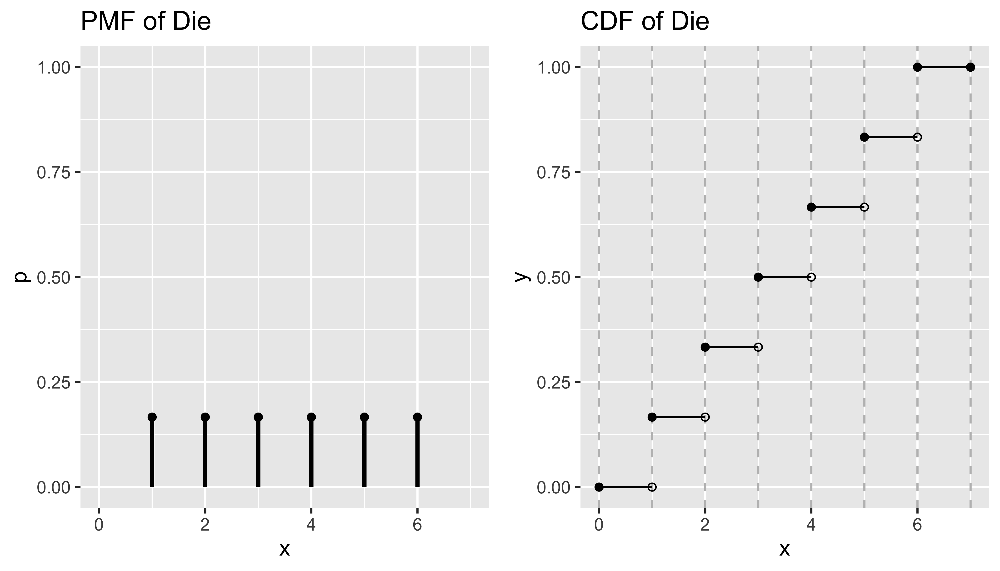
Each side has equal probability of occurring (1/6). The probability that you roll a 2 or less P(X<=2) = 1/6 + 1/6 = 1/3
Continuous distributions
- Probability Density Functions (PDF): \(f(x)\)
- Assigns probabilities to events in the sample space such that Kolmogorov Axioms still apply
- But… since their are an infinite number of values a continuous variable could take, p(X=x)=0, that is, the probability that X takes any one specific value is 0.
- Cumulative Distribution Function (CDF) \(F(x)=p(X\leq x)=\int_{-\infty}^{x}f(x)dx\)
- Instead of summing up to a specific value (discrete) we integrate over all possible values up to \(x\)
- Probability of having a value less than x
ü¶â Integrals
First, a brief aside on integral calculus:
What’s the area of the rectangle? \(base\times height\)

ü¶â Integrals
How would we find the area under a curve?
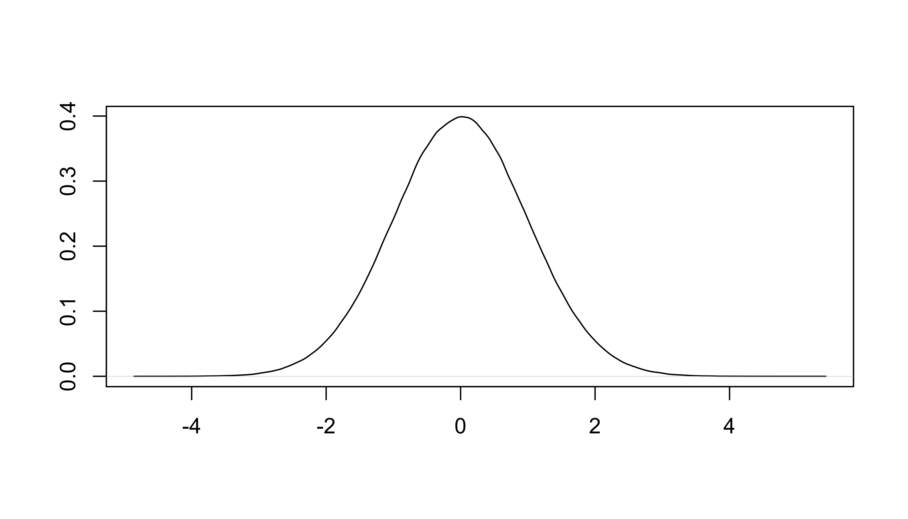
ü¶â Integrals
Well suppose we added up the areas of a bunch of rectangles roughly whose height’s approximated the height of the curve?
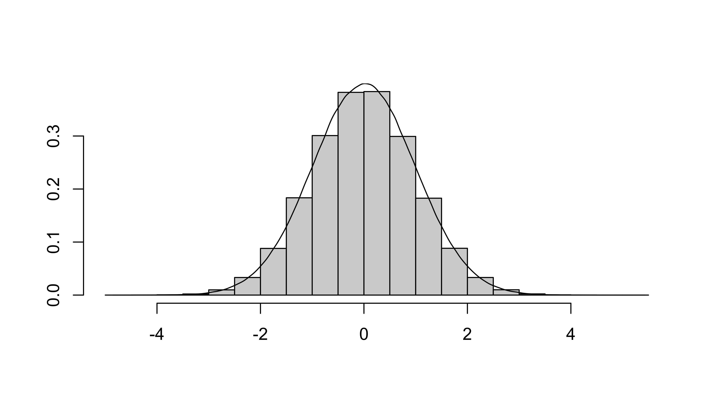
Can we do any better?
ü¶â Integrals
Let’s make the rectangles smaller
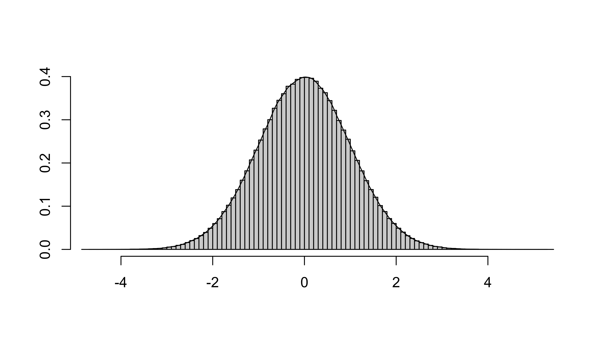
What happens as the width of rectangles get even smaller, approaches 0? Our approximation get’s even better:
ü¶â Link between PDF and CDF
If \[F(x)=p(X\leq x)=\int_{-\infty}^{x}f(x)dx \]
Then by the fundamental theorem of calculus
\[\frac{d}{dx}F(x)=f(x)\]
In words
the PDF (\(f(x)\)) is the derivative (rate of change) of the CDF (\(F(X)\))
the CDF describes the area under the curve defined by f(x) up to x
Properties of the CDF
\(0\leq F(x) \leq 1\)
\(F\) is non-decreasing and right continuous
\(\lim_{x\to-\infty}F(x)=0\)
\(\lim_{x\to\infty}F(x)=1\)
For all \(a,b \in \mathbb{R}\) s.t. \(a<b\)
\[p(a < X \leq b) = F(b)- F(a) = \int_a^b f(x)dx \]
Recall the PMF and CDF of a die

What’s the probability
\(p(X=1)...p(X=6) = 1/6\)
\(p( 2 < X \leq 5) = F(5)-F(2)=5/6-2/6=3/6=1/2\)
Common Probablity Distirbutions
In this course, we’ll use probability distributions to
model the data generating process as a function of parameters we can estimate (using Generalized Linear Models)
perform inference based on asymptotic theory (statements about how statistics would be have as our sample size approached infinity)
There are a lot of probability distributions:

Fortunately, the distributions you need to know to really master data science, are probably more something like

And the distributions we’ll work with the most in this class are an even smaller subset.
Bernoulli: Coinflips with probability of heads, \(p\)
Uniform: Coinflip with more than two outcomes
Binomial: Adding up coinflips
Poisson: Counting the total number of events
Geometric: Counting till a specific event occurs
Exponential: Counting till a specific event occurs in continous time
Normal:
- The limit of a Binomial distribution as \(n\to \infty\)
- The maximum entropy when we only know the mean and variance
t: A finite sample approximation of the normal
\(\chi^2\): Distribution of sums of squared variables from Normal distribution
Bernoulli Random Variables
Let’s start with our old friend the coin flip
A coin flip is an example of a Bernoulli random variable defined by 1 parameter \(p\), the probability of success. It has a pmf of
\[f(x) = \left\{ \begin{array}{cc} p & \mathrm{if\ } x=1 \\ 1-p & \mathrm{if\ } x=0 \\ \end{array} \right.\]
And a CDF of
\[F(x) = \left\{ \begin{array}{cc} 0 & \mathrm{if\ } x<1 \\ 1-p & \mathrm{if\ } 0\leq x<1 \\ 1& \mathrm{if\ } x\geq1 \\ \end{array} \right.\]
Note that in our coin flip example \(p=0.5\) but it need not. Just imagine a weighted coin like the Patriots use at Foxborough
Uniform Distribution
Our fair die examples represent a discrete uniform distribution: multiple outcomes, equally likely. We could even imagine an infinite number of possible outcomes within a range \([a,b]\), the key parameters for a uniform distribution, in which case our case our continuous uniform random variable has a pdf of
\[f(x) = \left\{ \begin{array}{cc} \frac{1}{b-a}& \mathrm{if\ } a \leq x\leq b \\ 0 & \text{otherwise} \\ \end{array} \right.\]
And a CDF:
\[F(x) = \left\{ \begin{array}{cc} 0 & x <a \\ \frac{x-a}{b-a}& \mathrm{if\ } a \leq x < b \\ 1 & x \geq b \\ \end{array} \right.\]
We won’t run into uniform distributions all that often except in examples like rolling a fair sided die, but often they’re used in Bayesian analysis as a form of uninformative prior.
Binomial Distributions
The binomial distribution may be thought of as the sum of outcomes of things that follow a Bernoulli distribution. Toss a fair coin 20 times; how many times does it come up heads? This count is an outcome that follows the binomial distribution.
The key parameters are the number of trials \(n\) and the probability of success for each trial \(p\) and the pdf of a binomial distribution is:
\[f(x)=\binom{n}{x}p^x (1-p) ^{1-x} \ \text{for x 0,1,2},\dots n\] So if we were to toss a fair coin 20 times and count up the number of heads, the most common outcome would be 10 heads

The binomial distribution will come in handy when trying to model binary outcomes.
Poisson Distributions
What would happen if you let the \(n\) in a binomial distribution go to infinity and \(p\) go to 0 so that \(np\) stayed the same. A Poisson distribution is what would happen. We use Poisson and negative binomial distributions to describe counts using the parameter \(\lambda\) which represents rate at which events occur.
\[f(x)=\frac{\lambda^x}{x!}e^{-\lambda}\]
We use these distributions to try and predict to predict the probability of a given number of events occurring in a fixed interval of time. Things like how many acts of political participation would a voter engage in over a year.
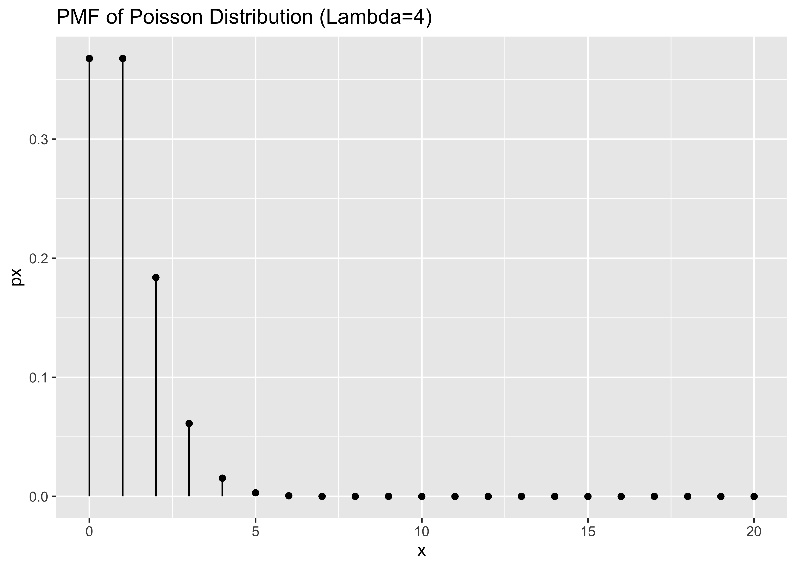
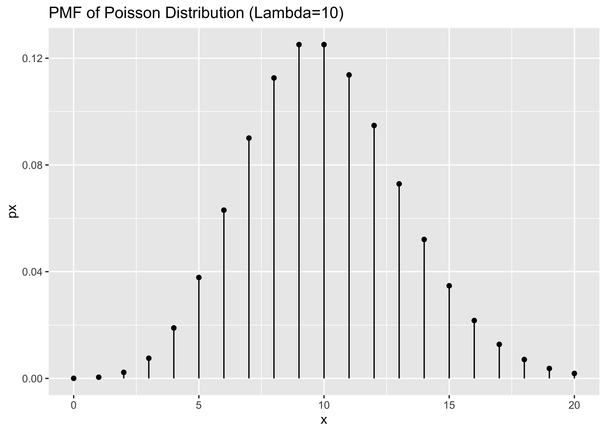
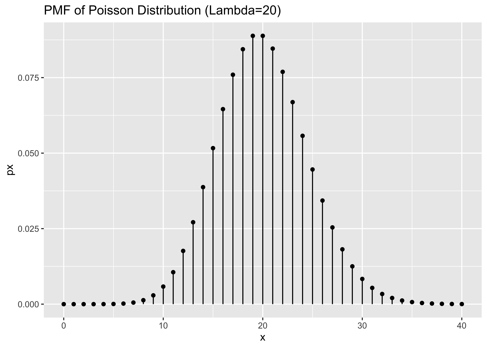
Geometric Distributions
What if we wanted to know the number times a coin came up tails before heads occurred? This discrete random variable follows a geometric distribution:
\[f(x)=p(1-p) ^{x}\]
Geometric and related distributions are useful for describing the time until an event occurs

Exponential Distributions
Taking a geometric distribution to its limit, you arrive at the continuous exponential distribution, again described by a \(\lambda = \frac{1}{\beta}\) rate parameter
\[f(x)=\frac{1}{\beta}\exp\left[-x/\beta\right]\]
Cioffa-Revilla (1984) uses an exponential distribution to model the stability of Italian governments.

Normal Distribution
Finally, there’s the distribution so ubiquitous we called it normal. The Normal distribution is defined by two parameters: a location parameter \(\mu\) that determines the center of a distribution and a scale parameter \(\sigma^2\) that determines the spread of a distribution
\[f(x)=\frac{1}{\sqrt{2\pi\sigma^2}}\exp \left[ -\frac{1}{2\sigma^2}(x-\mu)^2 \right]\]
Standard normal: \(X \sim N(\mu =0,\sigma^2=1)\)

As we’ll see normal distributions tend to arise when ever you’re summing variables.
That is sum together a bunch of values from almost any distribution and the distribution of their sums tends to follow a normal distribution.
Since lots of our statistics involve summation, lots of our statistics will tend to follow normal distributions in their limit (in finite samples like the world we live in they may follow related distributions like the t-distribution, but more on that later.)
Consider a binomial distribution with N=100 and p=.5.
The pmf of this variable (black lollipops) follows a distribution that’s closely approximated by a normal distribution (red line) with a mean 50 and a standard deviation of 5.
A relationship explained more generally by the Central Limit Theorem, which we’ll cover next week.
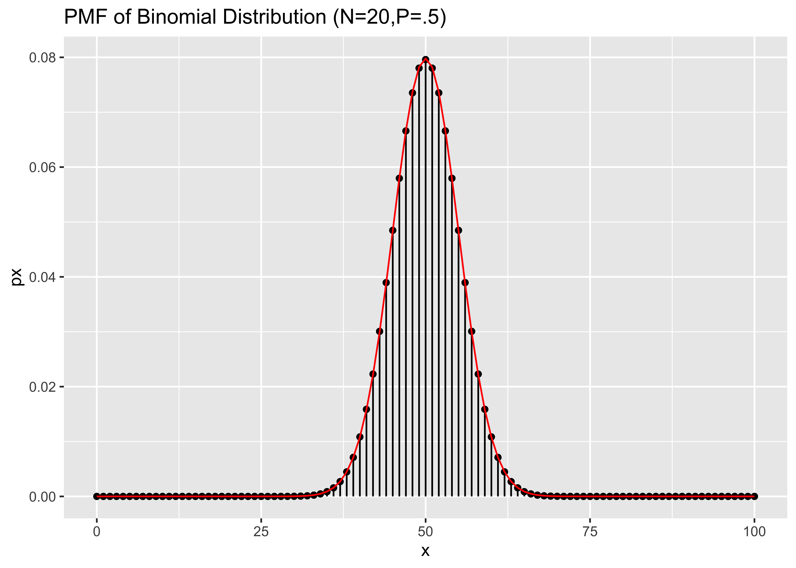
What’s the \(p(X \leq 0)\) for a normal distirbution with mean 0 and sd 1
Since the normal distribution is so common, it’s useful to get practice working with it’s pdf and cdf.
Consider the following question: If X is normally distributed variable with \(\mu=0\) and \(\sigma=1\), what’s the probability that X is less than 0 \(p(X\leq0)=?\) We could solve:
\[\int_{-\infty}^{0}\frac{1}{\sqrt{2\pi}\sigma}e^{-\frac{1}{2}\left(\frac{x-\mu}{\sigma}\right)^2}dx=0.5\]
But R’s pnorm() function will quickly tell us
- \(p(X\leq0)=\) 0.5
And we can visualize this as follows:
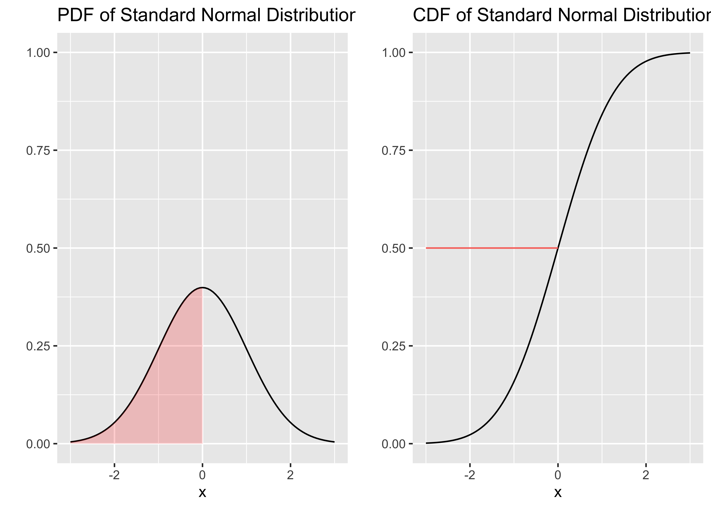
Consider some other questions?
- \(p(X=0)=0\)
- The probability that a continuous variable is exactly some value is always 0.
- \(p(X<0)=0.5\)
- \(p(-1< X< 1)\)
- \(p(-2< X< 2)\)
p(-1 < X < 1)
- \(p(-1< X< 1)=pr(X<1)-pr(X<-1)\)
\[\int_{-1}^{1}\frac{1}{\sqrt{2\pi}\sigma}e^{-\frac{1}{2}\left(\frac{x-\mu}{\sigma}\right)^2}dx=0.841-0.158=0.682\]

p(-2 < X < 2)
- \(p(-2< X\leq 2)=\) 0.9544997
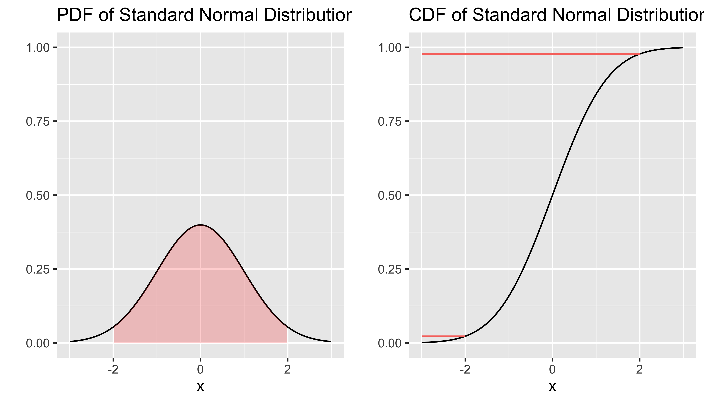
We’ll use the fact that close 95 of the observations of a standard normal variable will be within 2 standard deviations of the the mean of 0 for assessing whether a given statistic is likely to have arisen if the true value of that statistic were 0.
Expected Value
A (probability) weighted average of the possible outcomes of a random variable, often labeled \(\mu\)
Discrete:
\[\mu_X=E(X)=\sum xp(x)\]
Continuous
\[\mu_X=E(X)=\int_{-\infty}^{\infty}xf(x) dx\]
What’s the expected value of a 1 roll of fair die?
\[\begin{align*} E(X)&=\sum_{i=1}^{6}x_ip(x_i)\\ &=1/6\times(1+2+3+4+5+6)\\ &= 21/6\\ &=3.5 \end{align*}\]
Properties of Expected Values
\(E(c)=c\)
\(E(a+bX)=a+bE[X]\)
\(E[E[X]]=X\)
\(E[E[Y|X]]=E[Y]\)
\(E[g(X)]=\int_{-\infty}^\infty g(x)f(x)dx\)
\(E[g(X_1)+\dots+g(X_n)]=E[g(X_1)]+\dots E[g(X_n)\)
\(E[XY]=E[X]E[Y]\) if \(X\) and \(Y\) are independent
Variance
If \(X\) has a finite mean \(E[X]=\mu\), the \(E[(X-\mu)^2]\) is finite and called the variance of \(X\) which we write as \(\sigma^2\) or \(Var[X]\).
Note:
\[\begin{align*} \sigma^2=E[(X-\mu)^2]&=E[(X^2-2\mu X+\mu^2)]\\ &= E[X^2]-2\mu E[X]+\mu^2\\ &= E[X^2]-2\mu^2+\mu^2\\ &= E[X^2]-\mu^2\\ &= E[X^2]-E[X]^2 \end{align*}\]
- “The variance of X is equal to the expected value of X-squared, minus the square of X’s expected value.”
- \(\sigma^2=E[X^2]-E[X]^2\) is a useful identity in proofs and derivations
Variance and Standard Deviations
We often think of variances \(Var[X]\) as describing the spread of a distribution
\[\sigma^2=Var[X]=E[(X-E[X])^2]=E(X^2)-E(X)^2\]
A standard deviation is just the square root of the variance
\[\sigma=\sqrt{Var[X]}\]
Covariance
Covariance measures the degree to which two random variables vary together.
- \(Cov[X,Y] \to +\) An increase in \(X\) tends to be larger than its mean when \(Y\) is larger than its mean
\[Cov[X,Y]=E[(X-E[X])(Y-E[Y])]=E[XY]-E[X]E[Y]\]
Properties of Variance and Covariance
\(Cov[X,Y]=E[XY]-E[X]E[Y]\)
\(Var[X]=E[X^2]-(E[X])^2\)
\(Var[X|Y]=E[X^2|Y]-(E[X|Y])^2\)
\(Cov[X,Y]=Cov[X,E[Y|X]]\)
\(Var[X+Y]=Var[X]+Var[Y]+2Cov[X,Y]\)
\(Var[Y]=Var[E[Y|X]]+E[Var[Y|X]]\)
Correlation
- The correlation between \(X\) and \(Y\) is simply the covariance of \(X\) and \(Y\) divided by the standard deviation of each.
\[\rho=\frac{Cov[X,Y]}{\sigma_X\sigma_Y}\]
- Normalize covariance to a scale that runs between [-1,1]
class:inverse, center, middle # üí° # The Law of Large Numbers
The Law of Large Numbers (Intuitive)
Suppose we wanted to know the average height of our class.
We could pick someone at random, measure their height and get an estimate. It would be a pretty bad estimate (it would vary a lot from person to person), but it would be an unbiased estimate
How would we improve our estimate?
The Law of Large Numbers (Intuitive)
Suppose we increased our sample size from N=1 to N = 5.
Now our estimate reflects the average of 5 people’s heights as opposed to just 1. Both are are unbiased estimates of the truth, but the N=5 sample has a lower variance.
–
Now suppose we took a sample of size N = N-1. That is we measured everyone except one person. Our estimate will be quite close to the truth, varying slightly based on the height of the person left out.
–
Finally we took a sample of size N = 24 (e.g. the class size). Since our sample is the population, our estimate will be exactly equal to to the population. Each sample will give us the same “true” value. That is, it wil not vary at all.
–
The idea that as the sample size increases, the distance of a sample mean from the population mean \(\mu\) goes to 0 is called the Law of Large Numbers
The (Weak) Law of Large Numbers (Formally)
Let \(X_1, X_2, \dots\) be independent and identically distributed (i.i.d.) random variables with mean \(\mu\) and variance \(\sigma^2\).
Then for every \(\epsilon>0\), as the sample size increases (1), the distance of a sample mean from the population mean \(\mu\) (2) goes to 0 (3).
\[\overbrace{Pr(\left|\frac{X_1+\dots+X_n}{n}-\mu\right| > \epsilon)}^{\text{2. The distance of the sample mean from the truth}} \overbrace{\to 0}^{\text{3. Goes to 0}} \underbrace{\text{ as }n \to \infty}_{\text{1. As the sample size increases}}\]
Equivalently:
\[\lim_{n \to \infty} Pr(|\bar{X}_n - \mu| < \epsilon) = 1\]
üí™ Simulating the LLN
Rhe expected value of rolling a die 3.5.
\[ E[X] = \Sigma x_ip(X=x_i) = 1/6 * (1+2+3+4+5+6)\]
In terms of the LLN, think of our sample size as the number of times we roll a die.
If we rolled the die just once and took the average of our role, we could get a 1, 2, 3, 4, 5, or 6. which would be pretty far from our expected value of 3.5
If we rolled the die two times and took an average, we could still get an value of 1 or 6 for average, but values closer to our expected value of 3.5, happen more often
# Calculate the average from 2 rows
table(rowMeans(expand.grid(1:6, 1:6)))
1 1.5 2 2.5 3 3.5 4 4.5 5 5.5 6
1 2 3 4 5 6 5 4 3 2 1 As we increase our sample size (roll the die more times), the LLN says the chance that our sample average is far from the truth \((p(\left|\frac{X_1+\dots+X_n}{n}-\mu\right| > \epsilon))\), gets vanishingly small.
die <- 1:6
roll_fn <- function(n) {
rolls <- data.frame(rolls = sample(die, size = n, replace = TRUE))
# summarize rolls
df <- rolls %>%
summarise(
# number of rolls
n_rolls = n(),
# number of times 1 was rolled
ones = sum(rolls == 1),
# number of times 2 was rolled, etc..
twos = sum(rolls == 2),
threes = sum(rolls == 3),
fours = sum(rolls == 4),
fives = sum(rolls == 5),
sixes = sum(rolls == 6),
# Average of all our rolls
average = mean(rolls),
# Absolute difference between averages and rolls
abs_error = abs(3.5-average)
)
# Return summary df
df
}Then we could use a for-loop to simulate rolling our die once and calculating the average all the way up to rolling our die a 1000 times.
# Holder
sim_df <- NULL
# Set seed
set.seed(123)
for(i in 1:1000){
sim_df <- rbind(sim_df,
roll_fn(i)
)
}With only a few rolls, our average bounces around a lot
head(sim_df) n_rolls ones twos threes fours fives sixes average abs_error
1 1 0 0 1 0 0 0 3.000000 0.5000000
2 2 0 0 1 0 0 1 4.500000 1.0000000
3 3 0 2 0 0 0 1 3.333333 0.1666667
4 4 0 0 1 1 1 1 4.500000 1.0000000
5 5 1 1 1 0 1 1 3.400000 0.1000000
6 6 3 0 2 1 0 0 2.166667 1.3333333With a lot of rolls, our average is very close to 3.5
tail(sim_df) n_rolls ones twos threes fours fives sixes average abs_error
995 995 197 160 151 154 171 162 3.430151 0.06984925
996 996 184 164 176 149 175 148 3.412651 0.08734940
997 997 163 159 170 163 171 171 3.534604 0.03460381
998 998 162 163 142 173 185 173 3.576152 0.07615230
999 999 209 154 151 154 163 168 3.412412 0.08758759
1000 1000 181 189 147 179 146 158 3.394000 0.10600000Let’s visualize see how our average changes with the number of rolls, using ggplot()
p_die_lln <- ggplot(sim_df, aes(n_rolls, average))+
geom_line()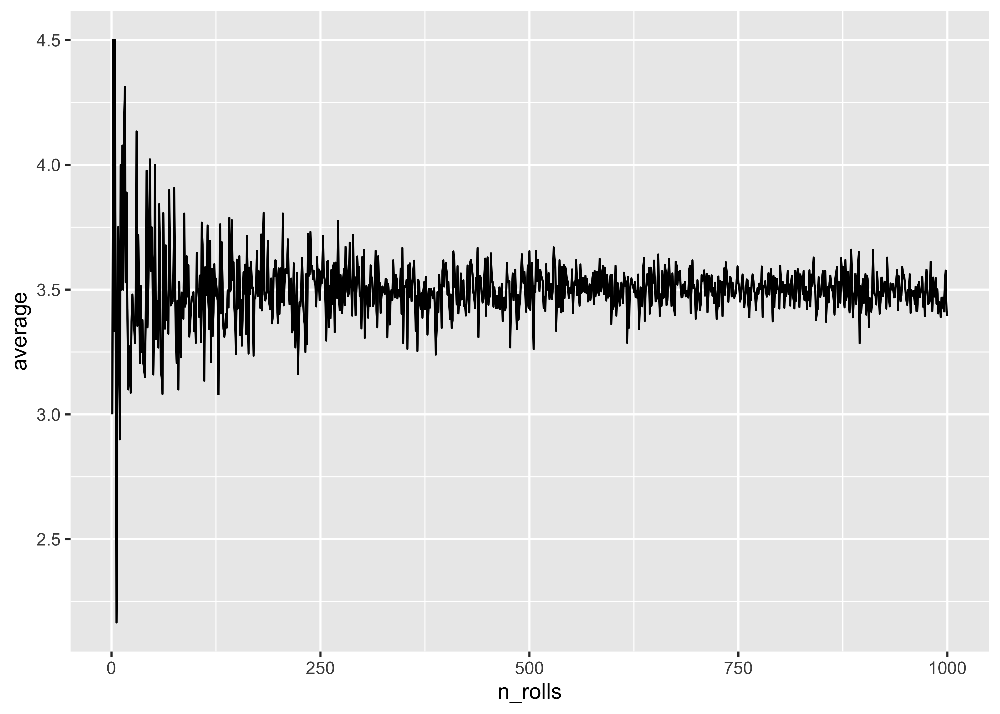
Your turn! Plot how the absolute value of the error changes as the number of rolls increases. Does it increase or decrease? How does the rate at which it goes up or down seem to change?
# Write your code here:class: inverse, center, middle #ü¶â ## ICYI: Proving the Weak LLN
Proving the Weak LLN
A proof of the LLN is as follows:
First define \(U\) such that its a sample mean for sample of size \(n\)
\[U=\frac{X_1+\dots +X_n}{n}\]
Proving the Weak LLN
Then show that the sample mean, \(U\) is an unbiased estimator of the population mean \(\mu\)
\[\begin{align*} E[U]&=E[\frac{X_1+\dots +X_n}{n}]=\frac{1}{n}E[X_1+\dots +X_n]\\ &=\frac{n\mu}{n}=\mu \end{align*}\]
With a variance
\[\begin{align*} Var[U]&=Var[\frac{X_1+\dots +X_n}{n}]=\\ &=Var[\frac{X_1}{n}]\dots Var[\frac{+X_n}{n}]\\ &\frac{\sigma^2}{n^2}\dots \frac{\sigma^2}{n^2}\\ &\frac{n \sigma^2}{n^2}\\ &\frac{\sigma^2}{n}\\ \end{align*}\]
That decreases with N.
Proving the Weak LLN
Then, by Chebyshev’s inequality, a theorem specifying, for a given distribution, the maximum fraction of values that can be some distance from that distribution’s mean:
\[Pr(\left|U-\mu\right| > \epsilon) \leq \frac{\sigma^2}{n\epsilon^2}\]
Which \(\to 0\) as \(n \to \infty\)
The Strong Law of Large Numbers
As you may have inferred, there is a weak law of large numbers and a strong law of large numbers.
The weak law of large numbers states that as the sample size increases, the sample mean converges in probability to the population value \(\mu\)
\[\lim_{n \to \infty} Pr(|\bar{X}_n - \mu| < \epsilon) = 1\]
The strong law of large numbers states that as the sample size increases, the sample mean converges almost surely to the population value \(\mu\)
\[\lim_{n \to \infty} Pr(|\bar{X}_n = \mu|) = 1\] The differences in types of convergence won’t matter much for us in this course
class:inverse, center, middle # Break
class:inverse, center, middle # üí° ## The Central Limit Theorem
So the LLN tells us that as our sample size grows, an unbiased estimator like the sample average, will get increasingly close to the to the “true” value of the population of mean.
Iif we took a bunch of samples of the same size and calculated the mean of each sample:
- the distribution of those sample means (the sampling distribution) would be centered around the truth (because the estimator is unbiased).
- the width of the distribution (its variance) would decrease as we increased the size of each sample (by the LLN)
The Central Limit Theorem tells us about the shape of that distribution.
Review: Z-scores and Standardization
Given a R.V. \(X\) with mean \(\mu\) and standard deviation \(\sigma\), we can define a new R.V. \(Z\) as the standardization of \(X\):
\[Z=\frac{X-\mu}{\sigma}\]
Where Z has \(\mu=0\) and \(\sigma=1\).
Notation for the CLT
Next let’s define some variables \(S\) and \(\bar{X}\) that are the sum \((S)\) and sample mean \((\bar{X})\) of \(n\) iid draws of \(X\)
Let \(X_1,X_2,\dots,X_n\) be independent and identically distributed RVs with mean \(\mu\) and standard deviation \(\sigma\).
Define \(S_n\) and \(\bar{X}_n\) as follows:
\[S_n= X_1,X_2,\dots,X_n= \sum_{i=1}^n X_i\]
\[\bar{X}=\frac{X_1,X_2,\dots,X_n}{n}= \frac{S_n}{n}\]
Additional facts for the CLT
We can show that:
\[\begin{alignat*}{3} E[S_n]&=n\mu \hspace{2em}Var[S_n]&=n\sigma^2 \hspace{2em} \sigma_S&=\sqrt{n}\sigma\\ E[\bar{X}_n]&=\mu \hspace{2em}Var[\bar{X}_n]&=\frac{\sigma^2}{n} \hspace{2em}\sigma_{\bar{X}}&=\frac{\sigma}{\sqrt{n}}\\ \end{alignat*}\]
Basically: the expected value and variance of the sum is just \(n\) times the population parameters (the true values for the distribution).
Since the mean is just the sum divided by the sample size, the expected value of the mean is equal to the population value and the variance and standard deviations of the mean are decreasing in \(n\).
Finally, we can define \(Z\) to be a function of either \(S\) or \(\bar{X}\)
\[Z_n=\frac{S_n-n\mu}{\sqrt{n}\sigma}=\frac{\bar{X}_n-\mu}{\sigma/\sqrt{n}}\]
Central Limit Theorem
For a sufficiently large \(n\)
\[\begin{align*} \bar{X_n}&\approx N(\mu,\sigma^2/n) \\ \bar{S_n} &\approx N(n\mu,n\sigma^2) \\ \bar{Z_n}&\approx N(0,1) \end{align*}\]
The distribution of means \((\bar{X_n})\) from almost any distribution \(X\) is approximately normal (converges in distribution), but with a smaller variance than (\(\sigma^2/n\))
Proof: Several ways, but requires a little more math than is required for this course
CLT: Why it matters
Why is this result so important?
Well lots of our questions come of the form, how does a typical value of Y vary with X.
We may not know the true underlying distribution of Y, but we can often approximate the distribution of a typical value of Y \((E[Y])\) using a normal distribution.
Simulating the CLT
For almost any distribution, the distribution of means from a sample of that distribution will converge to some Normal distribution.
Let’s consider a decidedly non-Normal Binomial distribution: with p = 0.2.
The expected value of Binomial Distribution \(X \sim B(n,p)\) is \(E[X] = n*p\).
If we were to flip a coin 20 times, whether the probability of heads was 0.2, then the most likely number of heads (the expected value) is 4.
If we were to flip a coin 100 times, whether the probability of heads was 0.2, then the most likely number of heads (the expected value) is 20.
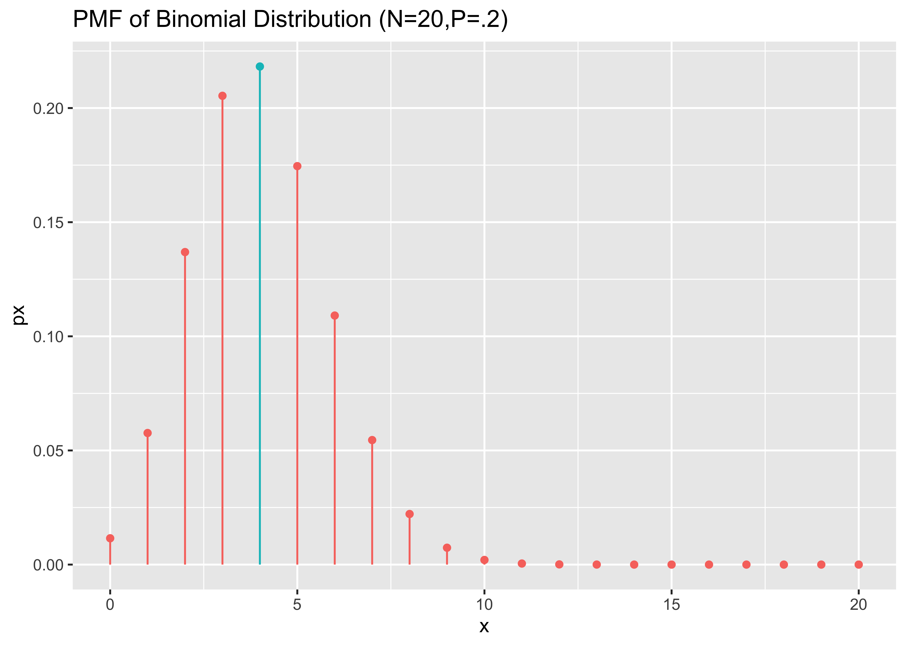
Simulating 10,000 draws from Binomial Distributions of Different Sizes
# Probability of success
p <- .2
# Sample sizes
samp_sizes <- c(20, 50, 100,1000)
# Number of simulations
nsims <- 10000
# Holder for simulations
df_sim <- tibble(
expand_grid(
samp_size = samp_sizes,
sim = 1:nsims,
sample_mean = NA
)
)Simulating 1,000 draws from Binomial Distributions of Different Sizes
Below we loop through each sample size in samp_sizes
for(i in samp_sizes){
df_sim$sample_mean[df_sim$samp_size == i] <- replicate(nsims, i*mean(rbinom(i, 1, p)))
}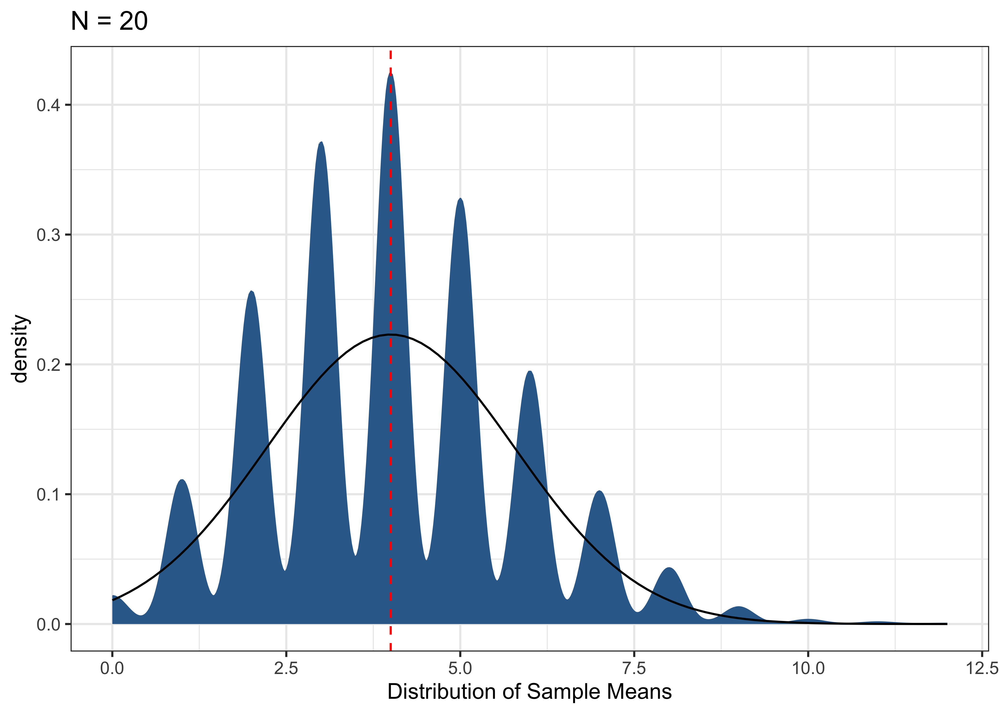
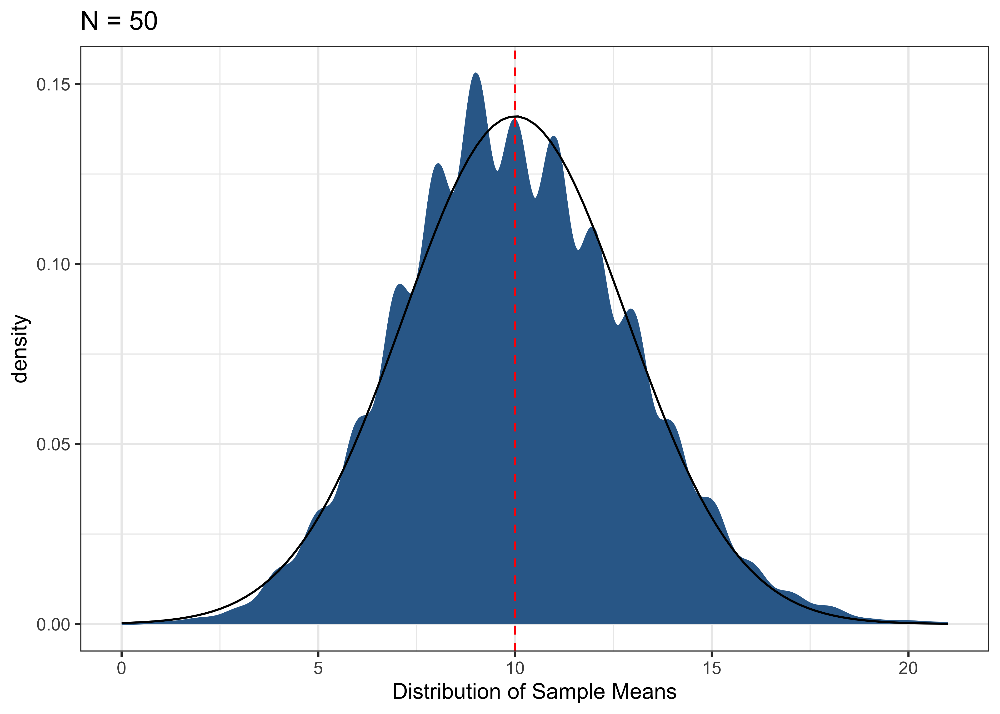
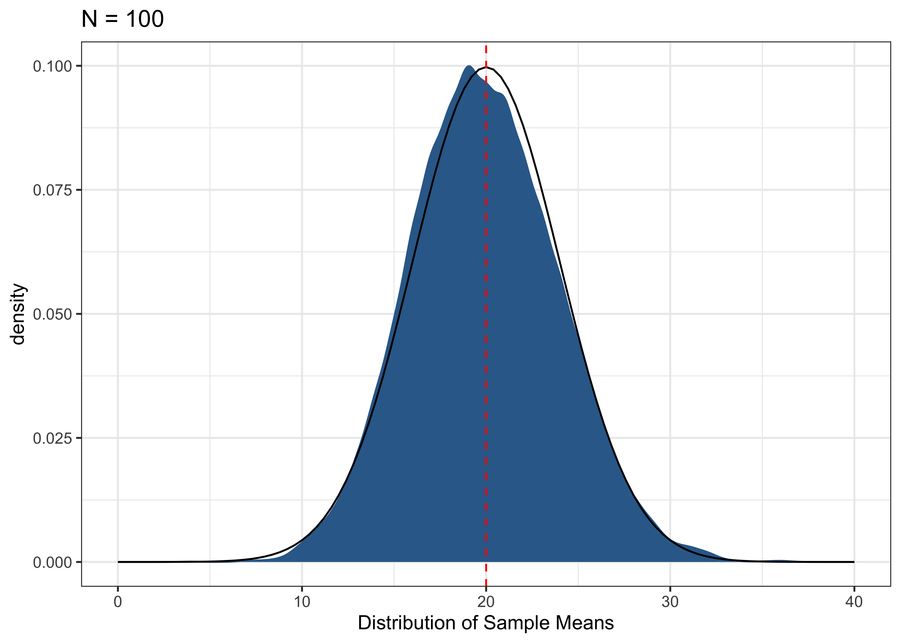
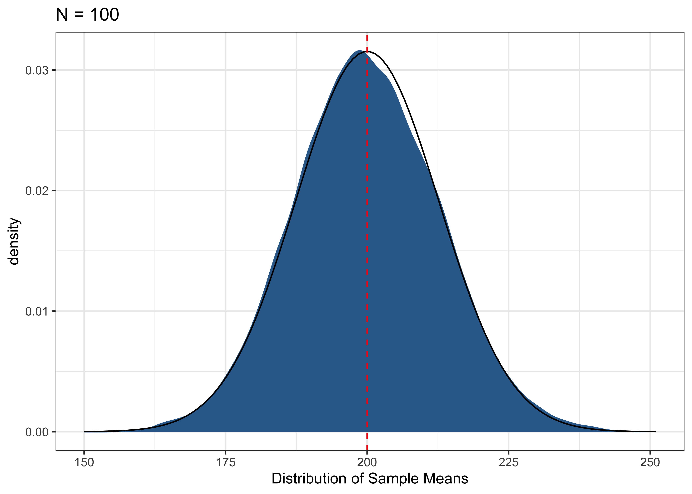
Finally, let’s consider a decided non normal distribution:
dist <- sample(18:80,size=10000, replace = T, prob = runif(length(18:80)))
samp_mean25 <- replicate(10000,mean(sample(dist,25, replace=F)))
samp_mean100 <- replicate(10000,mean(sample(dist,100, replace=F)))
samp_mean500 <- replicate(10000,mean(sample(dist,500, replace=F)))
ex_df <- tibble(
distribution = dist,
samp_mean25 = samp_mean25,
samp_mean100 = samp_mean100,
samp_mean500 = samp_mean500
)


Summary
So we see that our sampling distributions are centered on the truth, and as the sample size increases, the width of the distribution decreases (Law of Large Numbers)
The shapes of distributions of sample means can be approximated by a Normal Distribution \(\bar{X} \sim N(\mu, \sigma^2/n)\)
class: inverse, center, middle #ü¶â ## ICYI: Maximum Likelihood Estimation
Maximum Likelihood Estimation
The LLN and CLT lie behind many important proofs and theorems in statistics such as maximum likelihood estimation (MLE)
Broadly, MLE seeks to find parameters \(\theta\) for model of some data generating process (i.e. a probability distribution), that are most probable (i.e. maximize the likelihood) given some data.
ü¶â Maximum Likelihood Estimation
Formally, consider \(n\) iid random variables \(X_1, X_2, \ldots X_n\). We can then write their likelihood as
\[\mathcal{L}(\theta \mid x_1, x_2, \ldots x_n) = \prod_{i = i}^n f(x_i; \theta)\]
where \(f(x_i; \theta)\) is the density (or mass) function of random variable \(X_i\) evaluated at \(x_i\) with parameter \(\theta\).
MLE tries to find \(\hat{\theta}_{MLE}\) that maximizes \(\mathcal{L}(\theta \mid X)\)
ü¶â Properties of Maximum Likelihood Estimators
MLE Estimators are
- Functionally Invariant (The “Plug in Principle”)
- If \(\hat{\theta}\) is the MLE of \(\theta\) than then the MLE of some function of \(\theta\), \(f(\theta)\) is \(f(\hat\theta_{MLE})\)
- If we have the MLE of the variance, the square root of this will give us the MLE of the standard deviation
- Consistent (by the LLN)
- \(\hat\theta_{MLE}\) collapses to a spike over \(\theta\) as \(n \to \infty\)
- Asympotically Normal (by the CLT)
- A \(n \to \infty\) the sampling distribution of \(\hat\theta_{MLE}\) becomes Normally distributed
- Makes calculating quantities for inference easy
- Asympotically Efficient
- As \(n \to \infty\), \(\hat\theta_{MLE}\) tends to be the estimator with the lowest error
class: inverse, center, middle # üí° # Generalized Linear Models
Generalized Linear Models
- OLS provides a linear estimate to the conditional mean function
–
- If the conditional mean function is linear and the errors are normally distributed, OLS is the MLE.
–
- What if the conditional mean function is non-linear?
–
- Sometimes we can transform the mean function so that it is linear, and estimate a generalized linear model (GLM) using MLE
–
- Using a GLM often produces more “reasonable” estimates, and can make more efficient use of the data, although there are many cases where a linear estimate to conditional mean function works just fine (or better)
MLE and Generalized Linear Models
We can think some variable \(y\) as having a distribution \(f\) that contains both a stochastic (random) and systematic components
\[\begin{aligned} \text{Stochastic: }&& y \sim f(\mu,\alpha)\\ \text{Systematic: }&&\mu = g(X\beta) \end{aligned}\]
MLE and Generalized Linear Models
In the past we’ve described the process of modeling \(y\) using a linear regression:
\[y = \beta_0 + \beta_1 x + \epsilon\]
and with multiple predictors:
\[y = X\beta + \epsilon\]
MLE and Generalized Linear Models
We haven’t really talked about the distribution of \(\epsilon\), in part because OLS doesn’t require any distributional assumptions to be unbiased.
But if we assumed \(\epsilon\) are normally distributed, with mean 0 and variance \(\sigma^2\)
\[\epsilon \sim f_\mathcal{N}(0,\sigma^2)\]
Then we could write our model for \(y\) as follows:
\[\begin{aligned} y &\sim f_{\mathcal{N}}(\mu,\sigma^2)\\ \mu &= X\beta\end{aligned}\]
Where the systematic component of why is modeled by \(X\beta\) (i.e. g() is the identity function), with errors that are Normally distributed.
The \(\beta\)s that OLS estimates turn out to be the same values that would get by maximizing the likelihood of this function, given our data, \(X\), assuming normally distributed errors.
Generalized Linear Models
But what if our outcome doesn’t follow a normal distribution?
Say for example, we have a binary outcome,that we think follows a Bernoulli distribution with \(\pi\) probability of success.
We could model the systematic portion of this using the logistic function, \(g()\)
\[\begin{aligned}y &\sim f_{Bern}(\pi)\\ \pi &= \frac{1}{1+\exp(-{X\beta})}\end{aligned}\]
Again, we could estimate \(\beta\) using the MLE to fit a logistic regression.
MLE and Generalized Linear Models
Or if we had a count variable, we might use a Poisson distribution:
\[\begin{aligned}y &\sim f_{Pois}(\lambda)\\ \lambda &= \exp(X\beta)\end{aligned}\]
Again estimating \(\beta\) using MLE.
In this class, we’ll let R handle mechanics of actually fitting these models, and instead focus on interpreting their substantive differences
OLS vs Logistic Regression
One situation where we’d use MLE is the case of binary responses variable coded using \(0\) and \(1\).
In practice, these \(0\) and \(1\)s will code for two classes such as yes/no, non-voter/voter,, etc.
How should we model this relationship?
We could use OLS to produce a linear estimate of the conditional mean function \((\text{E}[Y \mid {\bf X} = {\bf x}])\), by finding \(\beta\)s that minimize the sum of squared errors
Or
We could use a logistic regression, to produce a linear estimate of the “log-odds” of the conditional mean function of our binary variable by finding \(\beta\)s that maximize the likelihood of this function.
Let’s simulate data from the following model:
\[\log\left(\frac{p({\bf x})}{1 - p({\bf x})}\right) = -2 + 3 x\]
We’ll codify this into a function:
sim_logistic_data = function(sample_size = 25, beta_0 = -2, beta_1 = 3) {
x = rnorm(n = sample_size)
eta = beta_0 + beta_1 * x
p = 1 / (1 + exp(-eta))
y = rbinom(n = sample_size, size = 1, prob = p)
data.frame(y, x)
}And use it to generate some data
set.seed(1)
example_data = sim_logistic_data()
head(example_data) y x
1 0 -0.6264538
2 1 0.1836433
3 0 -0.8356286
4 1 1.5952808
5 0 0.3295078
6 0 -0.8204684After simulating a dataset, we’ll then fit both ordinary linear regression and logistic regression.
# ordinary linear regression
fit_lm = lm(y ~ x, data = example_data)
# logistic regression
fit_glm = glm(y ~ x, data = example_data, family = binomial)Notice that the syntax is extremely similar. What’s changed?
lm()has becomeglm()- We’ve added
family = binomialargument
| Model 1 | Model 2 | |
|---|---|---|
| (Intercept) | 0.31** | -2.31* |
| (0.08) | (1.13) | |
| x | 0.30** | 3.66* |
| (0.09) | (1.65) | |
| R2 | 0.34 | |
| Adj. R2 | 0.31 | |
| Num. obs. | 25 | 25 |
| AIC | 22.74 | |
| BIC | 25.18 | |
| Log Likelihood | -9.37 | |
| Deviance | 18.74 | |
| ***p < 0.001; **p < 0.01; *p < 0.05 | ||
Making predictions with an object of type glm is slightly different than making predictions after fitting with lm().
In the case of logistic regression, with family = binomial, we have:
type |
Returned |
|---|---|
"link" [default] |
\(\hat{\eta}({\bf x}) = \log\left(\frac{\hat{p}({\bf x})}{1 - \hat{p}({\bf x})}\right)\) |
"response" |
\(\hat{p}({\bf x})\) |
That is, type = "link" will get you the log odds, while type = "response" will return \(P[Y = 1 \mid {\bf X} = {\bf x}]\) for each observation.
plot(y ~ x, data = example_data,
pch = 20, ylab = "Estimated Probability",
main = "Ordinary vs Logistic Regression")
abline(fit_lm, col = "darkorange")
curve(predict(fit_glm, data.frame(x), type = "response"),
add = TRUE, col = "dodgerblue", lty = 2)
legend("topleft", c("Ordinary", "Logistic", "Data"), lty = c(1, 2, 0),
pch = c(NA, NA, 20), lwd = 2, col = c("darkorange", "dodgerblue", "black"))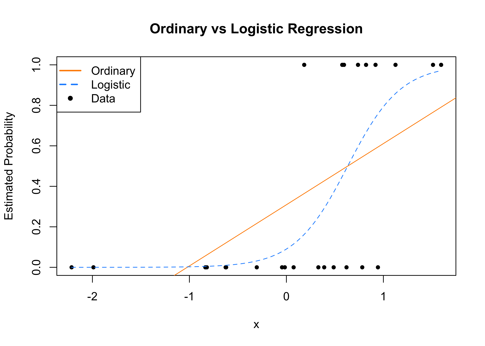
OLS vs Logistic Regression
OLS produces impossible predictions
The coefficients from logistic regression aren’t directly interpertable \(\to\) need predicted values.
- Can also calculate things like odds-ratios but I find this convoluted.
The marginal effect of \(X\) varies in a logistic regression
Interpreting Logistic Regression Coefficients
Our estimated model is then:
\[\log\left(\frac{\hat{p}({\bf x})}{1 - \hat{p}({\bf x})}\right) = -2.3 + 3.7 x\]
Because we’re not directly estimating the mean, but instead a function of the mean, we need to be careful with our interpretation of \(\hat{\beta}_1 = 3.7\).
This means that, for a one unit increase in \(x\), the log odds change (in this case increase) by \(3.7\). Also, since \(\hat{\beta}_1\) is positive, as we increase \(x\) we also increase \(p({\bf x})\).
For example, we have:
\[\hat{P}[Y = 1 \mid X = -0.5] = \frac{e^{-2.3 + 3.7 \cdot (-0.5)}}{1 + e^{-2.3 + 3.7 \cdot (-0.5)}} \approx 0.016\]
predict(fit_glm, newdata = data.frame(x=-0.5), type = "response") 1
0.01567416 \[\hat{P}[Y = 1 \mid X = 0] = \frac{e^{-2.3 + 3.7 \cdot (0)}}{1 + e^{-2.3 + 3.7 \cdot (0)}} \approx 0.09\]
predict(fit_glm, newdata = data.frame(x=0), type = "response") 1
0.09016056 \[\hat{P}[Y = 1 \mid X = 1] = \frac{e^{-2.3 + 3.7 \cdot (1)}}{1 + e^{-2.3 + 3.7 \cdot (1)}} \approx 0.38\]
predict(fit_glm, newdata = data.frame(x=.5), type = "response") 1
0.3814476 background-image:url(“https://resourcemoon.com/wp-content/uploads/2018/09/summery.png”) background-size:cover
Summary
The Law of Large Number’s says that as our sample size increases, our sample mean will converge to the population value
The Central Limit Theorem says that the distribution of those sample means will follow a normal distribution
Generalized Linear Models allow us to more accurately model different types of data-generating processes using Maxium Likelihood Estimation.